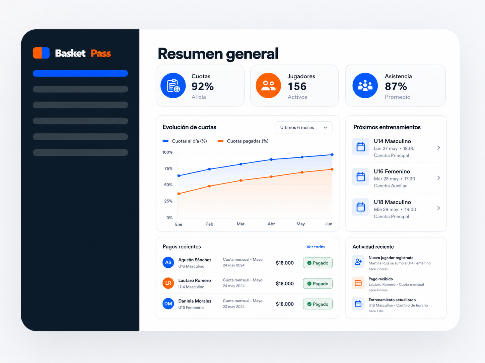

💸
Cobros desordenados
Cuotas impagas, registros manuales y falta de control.
Cuotas, jugadores, asistencia, estadísticas, carnet digital y campeonatos en una sola plataforma.
Muchos clubes amateur pierden tiempo revisando planillas, persiguiendo pagos, confirmando asistencia por mensajes y organizando campeonatos de forma manual.
Cuotas impagas, registros manuales y falta de control.
Datos de jugadores, pagos y partidos en distintos lugares.
Sin datos claros para medir rendimiento o tomar decisiones.
Organizar torneos es complejo y lento sin una plataforma.
BasketPass centraliza la operación diaria del club para que dirigentes, entrenadores, jugadores y apoderados trabajen con información clara, actualizada y disponible desde el celular.

Categoría
U15
Posición
Base
✓ Carnet verificado
Estado cuota
Al día
Temporada
2026
Cada jugador cuenta con una credencial digital con foto, categoría, número de camiseta, estado de validación, código QR y datos clave de la temporada.
Organiza torneos, equipos, partidos, tablas de posiciones y rendimiento deportivo desde un solo lugar.
| # | Equipo | PJ | Pts |
|---|---|---|---|
| 1 | Panteras | 8 | 15 |
| 2 | Leones | 8 | 14 |
| 3 | Tiburones | 8 | 13 |
| 4 | Halcones | 8 | 12 |
Puntos 120
Asistencias 85
Rebotes 98
Gestiona cuotas, jugadores, equipos, reportes y configuración del club.
Controla asistencia, partidos, estadísticas y seguimiento deportivo.
Revisa su carnet digital, calendario, estadísticas y estado de temporada.
Consulta pagos, horarios, información del jugador y notificaciones importantes.
Administra clubes, planes, métricas y configuración general.
Para comenzar a ordenar un equipo.
Ideal para clubes pequeños que quieren automatizar cuotas.
Para clubes con múltiples equipos y mayor gestión.
Para ligas, asociaciones y federaciones.
“Antes llevábamos todo en Excel. Ahora tenemos cuotas, jugadores y asistencia en un solo lugar.”
“La comunicación con los apoderados mejoró muchísimo. Todos reciben la información al instante.”
“Las estadísticas nos ayudan a potenciar a cada jugador y tomar mejores decisiones.”
Sí. Puedes partir con un equipo y crecer hacia múltiples categorías.
Sí. La experiencia está pensada para uso desde celular, notebook o tablet.
Sí. Permite ordenar cuotas, pagos y recordatorios para mejorar la cobranza.
El plan Starter considera integración con pagos online mediante MercadoPago.
Sí. BasketPass permite organizar campeonatos, partidos, tablas y estadísticas.
Ordena tu club, automatiza tu gestión y entrega una mejor experiencia a jugadores, entrenadores y apoderados.